Once you define a pseudo table in DQL, you can define tables used by DQL in DQL tab:
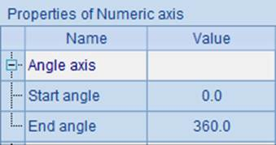
Click Tool->Generate table from pseudo table to generate a DQL table based on a defined pseudo table:
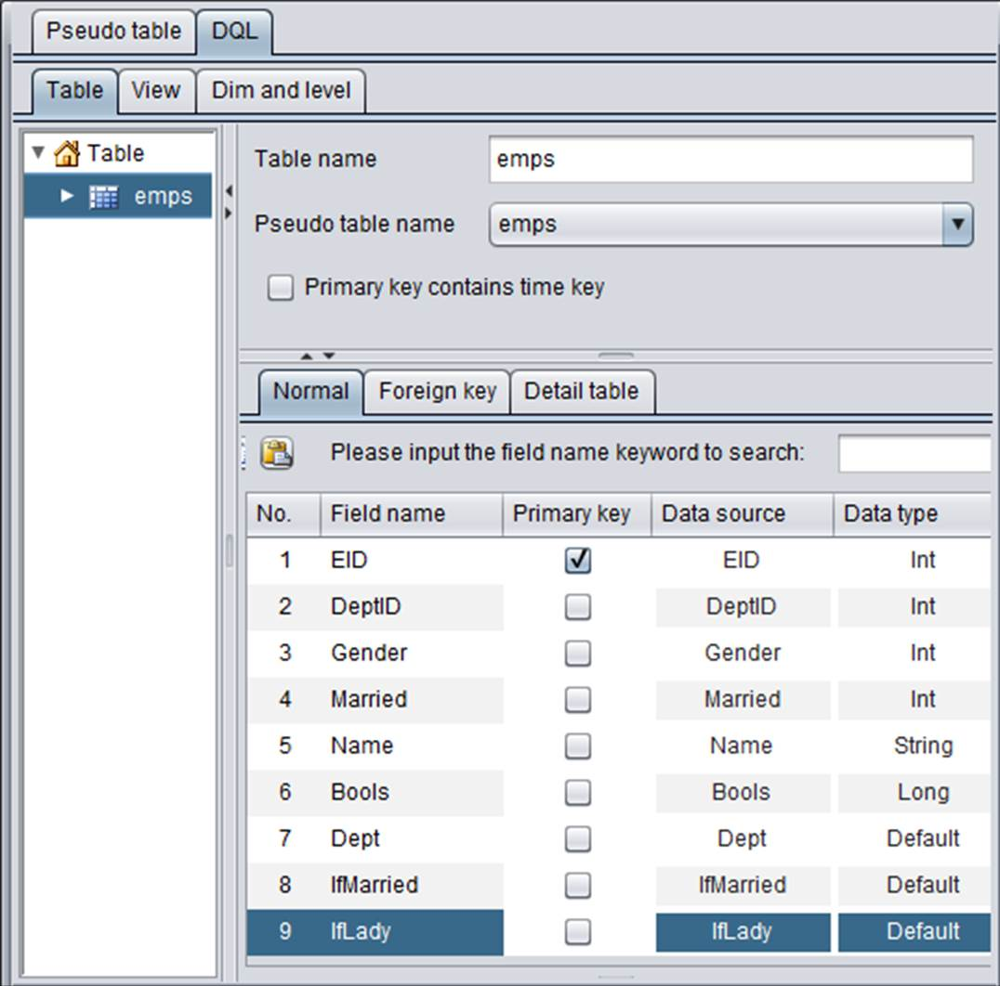
Click ¡°OK¡± button to finish adding new pseudo fields:
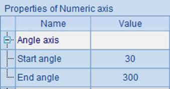
With DQL, as table data originates from a certain defined pseudo table, you can click 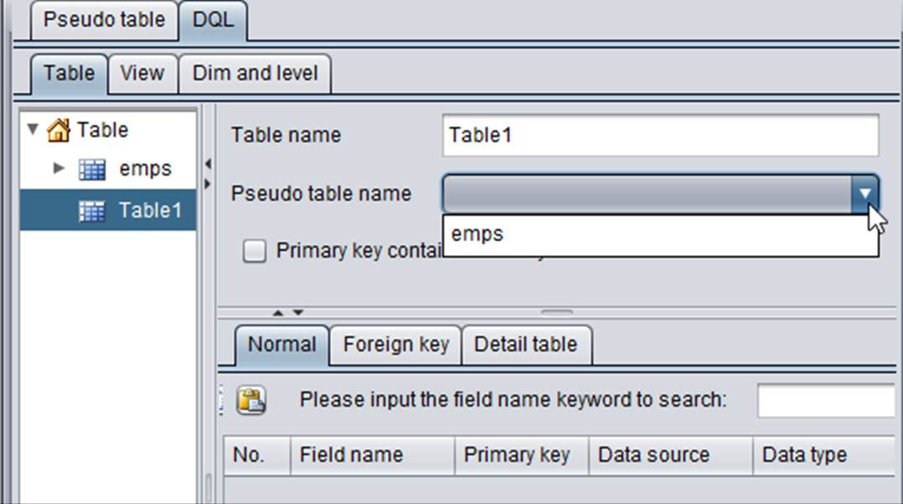 or select Edit->Add table through the menu bar to add a DQL table. Select a defined pseudo table after ¡°Pseudo table name¡± to make configurations line by line:
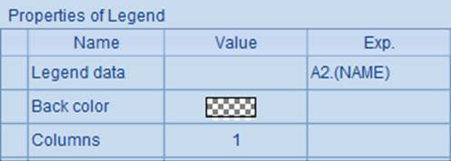
In DQL, a table corresponds to a pseudo table file. Similar to a table sequence and a database table, a DQL table has data structure and is made up of records. When a DQL table is successfully added, its metadata is stored as test.glmd. The primary key is the only field to identify records in a DQL table and inherits from the composite table file that generates the pseudo table. In the above emps table, no foreign key field is set up for it. A non-dimension field is called measure field.
Once a DQL table is defined, you can make queries in DQL with the DQL tool. Click Tool->DQL Query through the menu bar and perform queries via DQL statements. The DQL syntax is similar to the simple SQL, for instance:
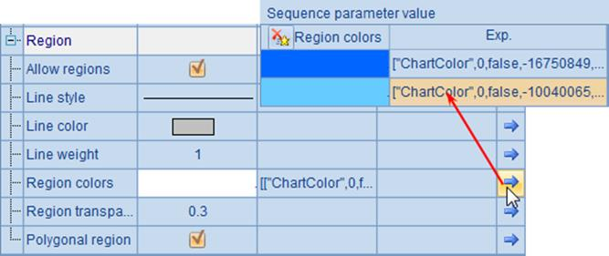
Click ¡°Execute¡± button to execute the DQL query. Query result is displayed on ¡°Browse data¡± page:
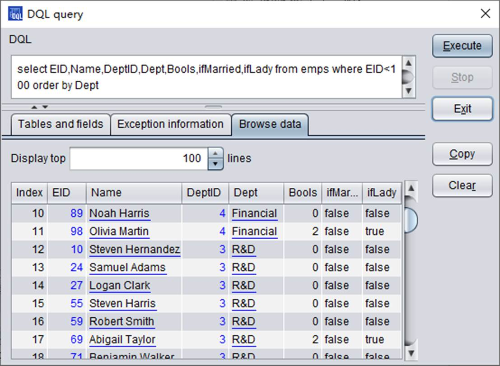
DQL supports SQL-like syntax, such as where, as order by, for instance:
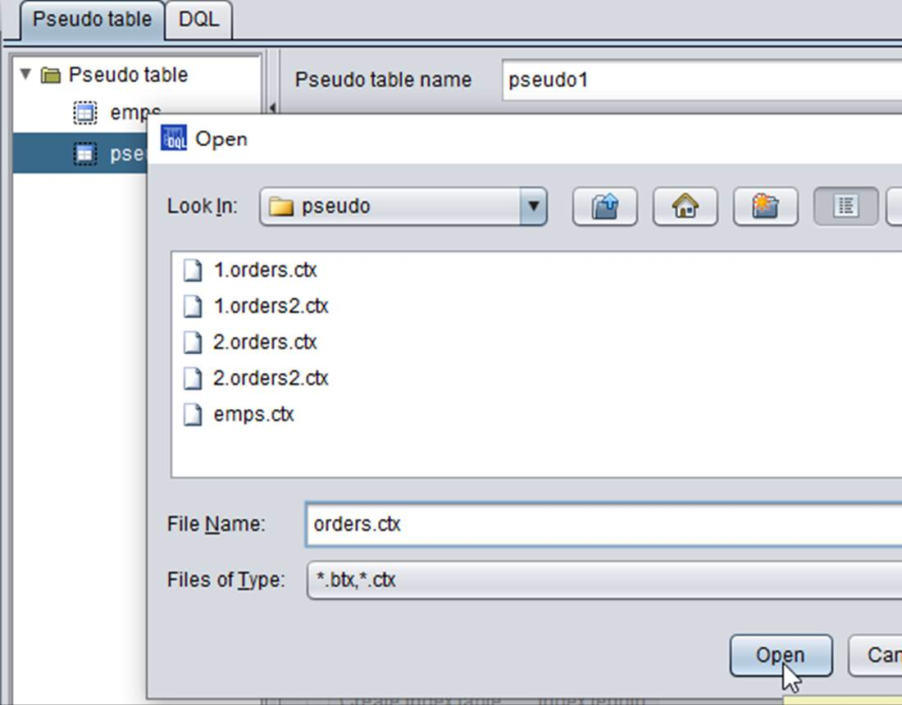
Now we add a pseudo table definition based on a multi-zone composite table. When setting up the multi-zone composite table file, you should not select a certain zone table file, but you need to change and use the overall composite table name:
The multi-zone table file¡¯s zone table numbers are set up after ¡°Zone¡±, and select the zone column after ¡°Zone column¡±:
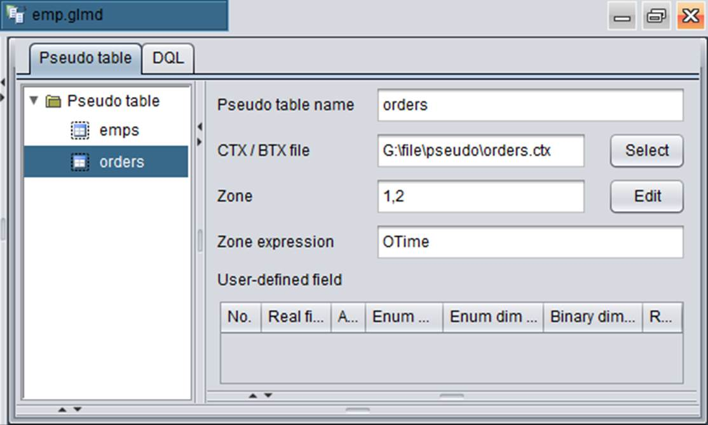
After a pseudo table is added, click Tool->Generate table from pseudo table on the DQL tab to add the new pseudo table as a DQL table:
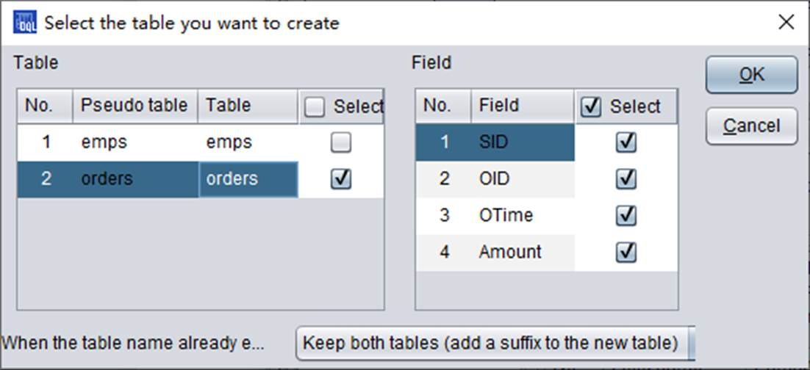
The new DQL table is as follows:
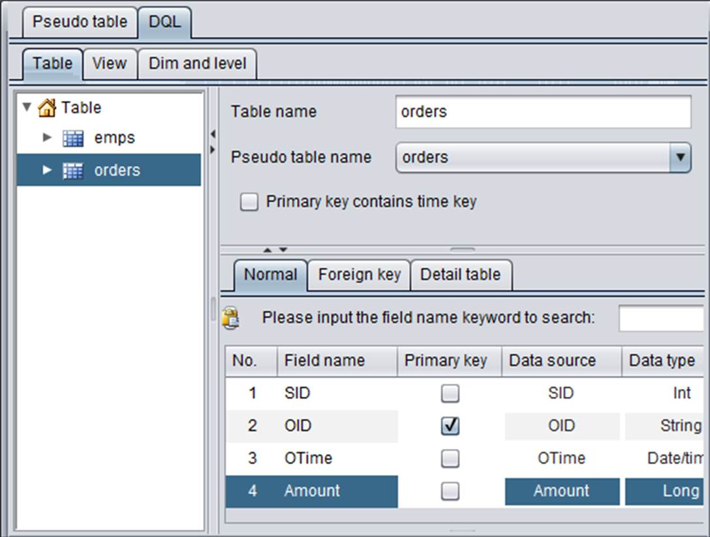
The DQL query works the same as esProc code that queries the composite table via the pseudo table:
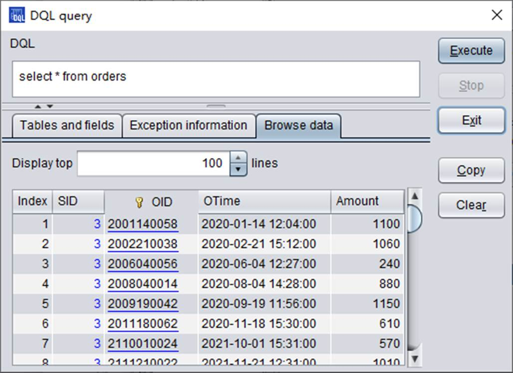
Similar to SQL, use * when querying all fields. The data queried from the multi-zone composite table will also be merged according to the first field.
As we use orders table, we now use multi-zone composite table orders2.ctx to generate a pseudo table definition:
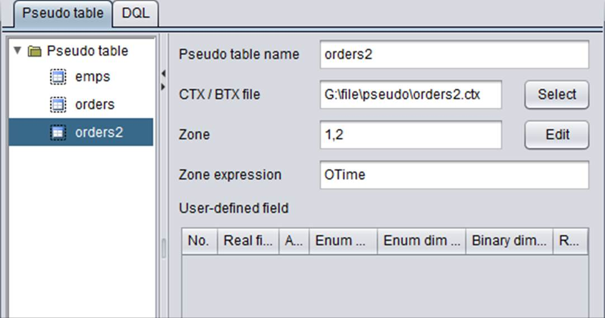
In multi-zone composite table orders2.ctx, the first field is City. We need to set user field as the SID. When the pseudo table finishes configurations, create the corresponding DQL table for it:
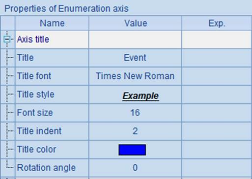
Then import it to the DQL table definition, make query in ¡°DQL query¡± window, and get the following result:
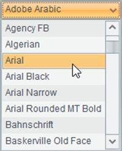
The result is the same as that obtained using esProc, which is merged by the first field.